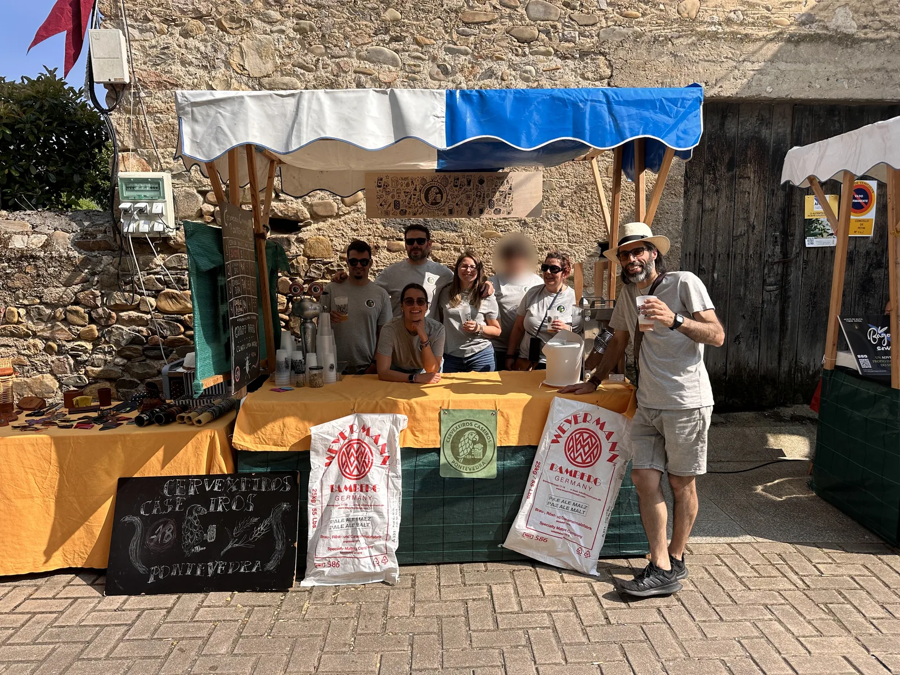

A nosa primeira feira: Petín, o comezo do camiño.
Un dos pasos máis importantes para calquera proxecto é saír ao encontro da xente. No noso caso, ese paso materializouse por primeira vez nun posto de feira, e o lugar non podía ser mellor: Petín.
Petín: a nosa primeira experiencia como posto
A Feira de Petín foi a primeira ocasión na que participamos cun posto propio, compartindo espazo con outras propostas artesás, gastronómicas e culturais. Para nós foi moito máis ca unha feira: foi un estrearse, aprender sobre o terreo e comprobar como responde o público cando pode achegarse, preguntar, probar e conversar sen présas.
Montar o posto, preparar o material e explicar o que facemos foi toda unha experiencia. Houbo curiosidade, preguntas, interese real polo proceso e moitas conversas arredor da cervexa, da elaboración artesanal e da importancia dos proxectos feitos con coidado.
O valor de estar presentes
Participar en feiras como Petín permítenos:
- Dar a coñecer o noso traballo de forma directa
- Explicar con calma que hai detrás de cada proxecto
- Crear vínculo co público e co territorio
- Aprender das reaccións, das preguntas e das inquedanzas da xente
As feiras son un espazo vivo, onde o contacto humano marca a diferenza. Para nós, esa primeira presenza confirmou algo importante: queremos seguir estando aí, en prazas, feiras e eventos, formando parte da vida local.
Un punto de partida
Petín foi o comezo. A primeira feira nunca se esquece, e para nós marcou un antes e un despois. A partir de aquí, seguiremos participando en novas feiras e eventos, levando o noso posto a outros lugares, sumando experiencias e construíndo camiño pouco a pouco.
Porque os proxectos que nacen no territorio tamén medran a pé de rúa.